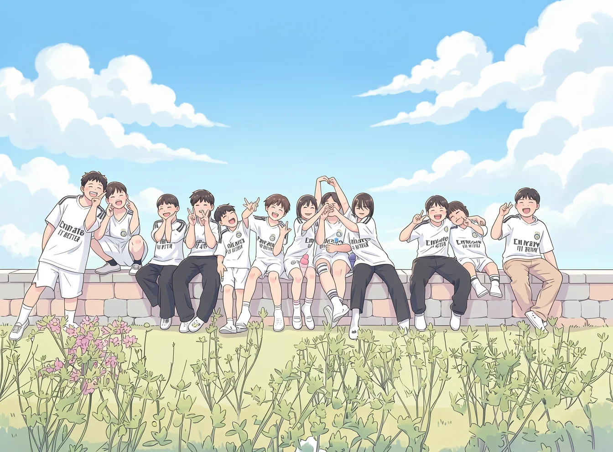

2026년 금일초
3학년의 추억
우리 반의 3월부터 10월까지를 맑은 그림 27장으로 다시 그린 웹사진전이에요.
- 1휴대폰 카메라로 QR을 찍어요카메라 앱을 켜고 QR에 비추면 주소가 떠요.
- 2달별로 그림을 넘겨 봐요그림을 누르면 크게 보이고 옆으로 밀면 다음 그림으로 넘어가요.
- 3원본 사진은 비밀번호로 열어요큰 그림 아래 '원본 사진'을 누르고 담임 선생님께 받은 비밀번호를 넣으면 볼 수 있어요.

우리 반의 3월부터 10월까지를 맑은 그림 27장으로 다시 그린 웹사진전이에요.
eunhorang.github.io/
geumil-3-memories
홈 화면에 추가하면 앱처럼 열 수 있어요.